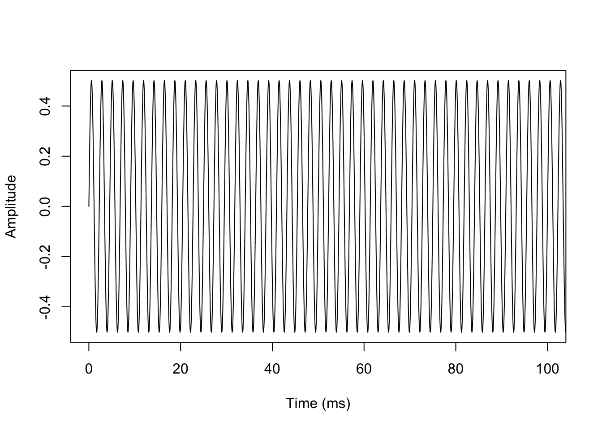
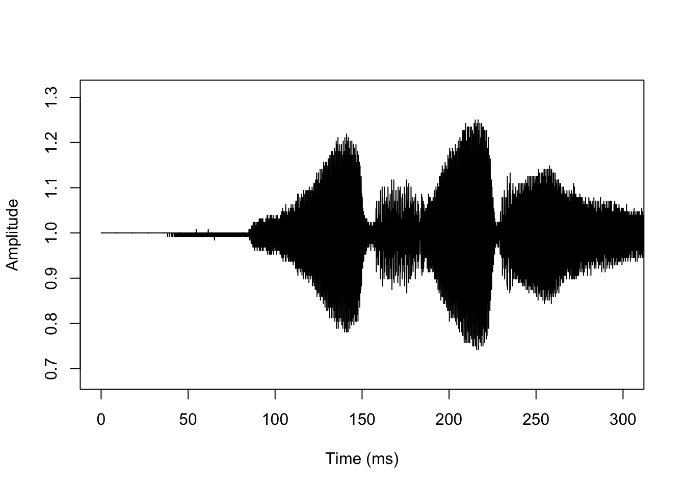
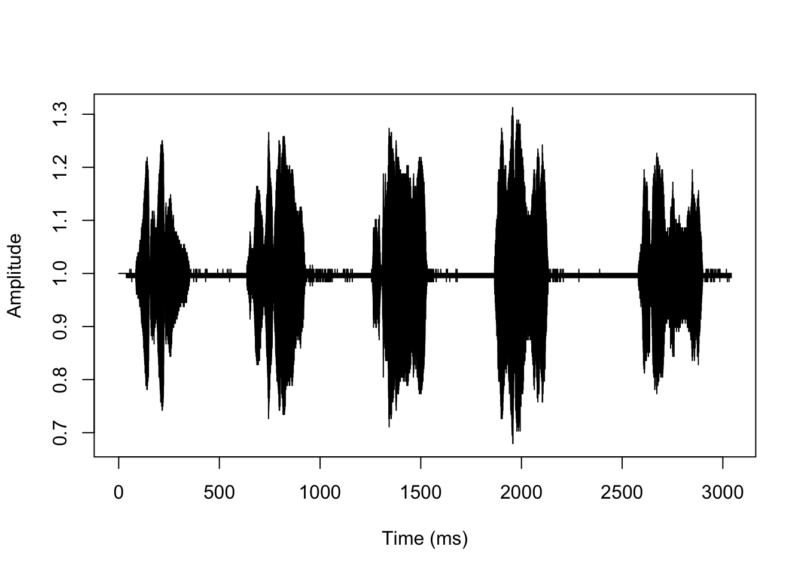

sndObj <- readWave('data/sons/440-wav.wav')
str(sndObj)## Formal class 'Wave' [package "tuneR"] with 6 slots
## ..@ left : int [1:441000] 0 1029 2054 3071 4075 5063 6033 6977 7896 8781 ...
## ..@ right : int [1:441000] 0 1029 2054 3070 4075 5064 6033 6977 7894 8782 ...
## ..@ stereo : logi TRUE
## ..@ samp.rate: int 44100
## ..@ bit : int 16
## ..@ pcm : logi TRUEl=length(sndObj@left)
l / sndObj@samp.rate## [1] 10s1 <- sndObj@leftthe readWave function reads wav files as integer types. Our wav file has a 16-bit depth (sndObj@bit), this means that the sound pressure values are mapped to integer values that can range from -2^15 to (2^15)-1. We can convert our sound array to floating point values ranging from -1 to 1 as follows:
s1 <- s1 / 2^(sndObj@bit -1)A time representation of the sound can be obtained by plotting the pressure values against the time axis. However we need to create an array containing the time points first:
timeArray <- (0:(l-1)) / sndObj@samp.rate
timeArray <- timeArray * 1000 #millisecondsplot(timeArray, s1, type='l', col='black', xlab='Time (ms)', ylab='Amplitude',
xlim=c(0,100))
sndObj <- readWave('data/sons/bird.wav')
str(sndObj)## Formal class 'Wave' [package "tuneR"] with 6 slots
## ..@ left : int [1:33536] 128 128 128 128 128 128 128 128 128 128 ...
## ..@ right : num(0)
## ..@ stereo : logi FALSE
## ..@ samp.rate: int 11025
## ..@ bit : int 8
## ..@ pcm : logi TRUEl=length(sndObj@left)
l / sndObj@samp.rate## [1] 3.041814s1 <- sndObj@left
s1 <- s1 / 2^(sndObj@bit -1)
timeArray <- (0:(l-1)) / sndObj@samp.rate
timeArray <- timeArray * 1000 #scale to milliseconds
plot(timeArray, s1, type='l', col='black', xlab='Time (ms)', ylab='Amplitude',
xlim=c(0,300))
plot(timeArray, s1, type='l', col='black', xlab='Time (ms)', ylab='Amplitude')
Copyright © 2016 Kezhan SHI